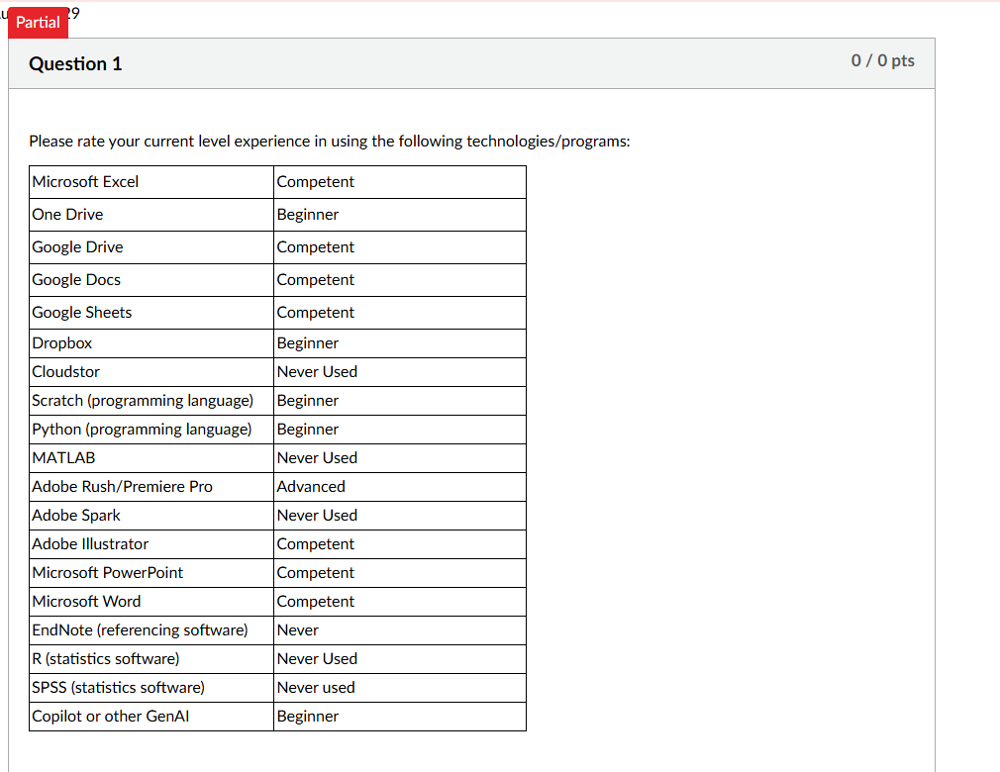
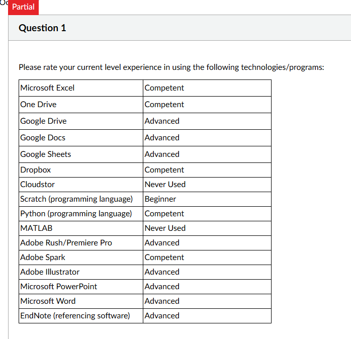

Task 2: Digital Skills
My Digital Skills Assessment results from the start (Week 2) and end (Week 12) of the unit, how my skills developed, and what I want to work on next.
Evidence


Start vs end summary
| Technology or program | Start (Week 2) | End (Week 12) | Change |
|---|---|---|---|
| Microsoft Excel | Competent | Competent | No change |
| OneDrive | Beginner | Competent | ↑ 1 level |
| Google Drive | Competent | Advanced | ↑ 1 level |
| Google Docs | Competent | Advanced | ↑ 1 level |
| Google Sheets | Competent | Advanced | ↑ 1 level |
| Dropbox | Beginner | Competent | ↑ 1 level |
| Cloudstor | Never used | Never used | No change |
| Scratch | Beginner | Beginner | No change |
| Python | Beginner | Competent | ↑ 1 level |
| MATLAB | Never used | Never used | No change |
| Adobe Rush / Premiere Pro | Advanced | Advanced | No change |
| Adobe Spark | Never used | Competent | ↑ 2 levels |
| Adobe Illustrator | Competent | Advanced | ↑ 1 level |
| Microsoft PowerPoint | Competent | Advanced | ↑ 1 level |
| Microsoft Word | Competent | Advanced | ↑ 1 level |
| EndNote (referencing) | Never used | Advanced | ↑ 3 levels |
| R (statistics) | Never used | Not asked | – |
| SPSS (statistics) | Never used | Not asked | – |
| Copilot or other GenAI | Beginner | Not asked | – |
Levels run from Never used to Beginner, Competent and Advanced. The end-of-unit quiz didn’t ask about R, SPSS or GenAI. Across the 16 technologies in both quizzes, my rating went up for 11 and stayed the same for 5, and none went down. The biggest jumps were EndNote (never used to advanced) and Adobe Spark (never used to competent), and Python moved from beginner to competent. Excel, Scratch and Adobe Rush/Premiere Pro stayed the same, and I still haven’t used Cloudstor or MATLAB.
Reflection
Situation
Before this unit, I was already confident using everyday software, working in spreadsheets such as Excel, and coding and using other technical tools.
Task
In Week 2, I completed the start-of-unit Digital Skills Assessment, and in Week 12 the end-of-unit assessment, which evaluated some of the same skills again.
Action
During the unit, my skills developed through writing my research paper, the spreadsheet task, working on our group project, and building this portfolio. I applied my digital skills in this unit’s group project, in my other units, at work, and in my own personal projects.
Result
The skills I feel developed the most were research and referencing, and presenting my work online.
My quiz results back this up: my self-ratings went up for 11 of the 16 technologies in both quizzes, including EndNote for referencing and Word, PowerPoint and Google Docs for presenting my work.
What I’d do differently / next
I want to develop my programming for data analysis further, along with my research and academic writing. I’ll do this by practising in my upcoming units, working on personal projects, and asking for feedback on my work.
How I used AI
I used AI for technical help: fixing errors when I was working in Fusion in DaVinci Resolve, and answering programming questions. I also used it to check the wording and grammar of my writing.
I also used an AI assistant to help build this portfolio website. It provided a little of the programming for the site (primarily CSS styling assistance) and helped me solve problems along the way. It also helped me spell-check and polish the grammar of my content, but the evidence, research paper and reflections are based on my own work and experiences.